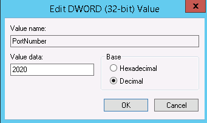
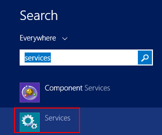
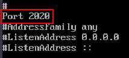

Scenarios
This section describes how to change a port for remote logins.
Windows
The following procedure uses an ECS running Windows Server 2012 as an example. The default login port of a Windows ECS is 3389. To change it to port 2020, for example, do as follows:
- In the Run dialog box, enter regedit to access the registry editor.
- In Registry Editor, choose HKEY_LOCAL_MACHINE > SYSTEM > CurrentControlSet > Control > Terminal Server > Wds > rdpwd > Tds > tcp and double-click PortNumber.
- In the dialog box that is displayed, set Base to Decimal.
- Change the value in Value data to the new port number, which is 2020 in this example.
Figure 1 Changing the port number to 2020

- In Registry Editor, choose HKEY_LOCAL_MACHINE > SYSTEM > CurrentControlSet > Control > Terminal Server > WinStations > RDP-Tcp and double-click PortNumber.
- In the dialog box that is displayed, set Base to Decimal.
- Change the value in Value data to the new port number, which is 2020 in this example.
Figure 2 Changing the port number to 2020
- (Skip this step if the firewall is disabled.) Modify the inbound rules of the firewall.
Choose Control Panel > Windows Firewall > Advanced Settings > Inbound Rules > New Rule.
- Rule Type: Port
- Protocol in Protocol and Ports: TCP
- Port in Protocol and Ports: Specific local ports, 2020 in this example
- Action: Allow the connection
- Profile: Default settings
- Name: RDP-2020
After the configuration, refresh the page to view the new rule.
- Modify the security group rule.
Add an inbound rule in which Protocol is set to TCP and Port Range is set to 2020.
For details, see "Adding a Security Group Rule" in the Virtual Private Cloud User Guide.
Use port 2020 to remotely log in to the ECS.
- Open the Windows search box, enter services, and select Services.
Figure 3 Selecting Services

- In the Services window, restart Remote Desktop Services or the ECS.
- Use "IP address:Port" to remotely access the ECS.
Linux
The following procedure uses an ECS running CentOS 7.3 as an example. The default login port of a Linux ECS is 22. To change it to port 2020, for example, do as follows:
- Run the following command to edit the sshd configuration file:
vi /etc/ssh/sshd_config
- Delete the comment tag (#) from the #port 22 line and change 22 to 2020.
Figure 4 Changing the port number to 2020

- Press Esc to exit Insert mode and enter :wq! to save the settings and exit.
- Run either of the following commands to restart sshd:
service sshd restart
Or
systemctl restart sshd
- Skip this step if the firewall is disabled. Configure the firewall.
The firewall varies depending on the CentOS version. CentOS 7 uses firewalld, and CentOS 6 uses iptables. The following operations use CentOS 7 as an example.
Run the firewall-cmd --state command to check the firewall status.
- Modify the security group rule.
Add an inbound rule in which Protocol is set to TCP and Port Range is set to 2020.
For details, see "Adding a Security Group Rule" in the Virtual Private Cloud User Guide.
Use port 2020 to remotely log in to the ECS.
- Use "IP address:Port" to remotely access the ECS.